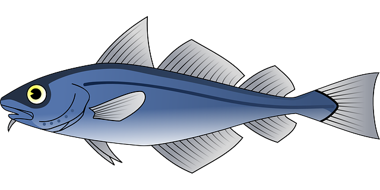

| Expected Result | When the meaningful image changes dynamically, the text alternative updates to match. |
|---|---|
| Actual Result | When the meaningful image changes dynamically, the text alternative does not update to match. |
| Solution |
Code the page to update the text alternative whenever the image changes. |
| Example |
Button Changes Image/h4>This button uses JavaScript to change the  |
| Why It's Important |
Blind and visually impaired users need to have a text alternative for meaningful images so that they can be interpreted by assistive technology such as screen readers and braille devices. If the text alternative does not match the visible image, these users would not have the correct information. |
| References |